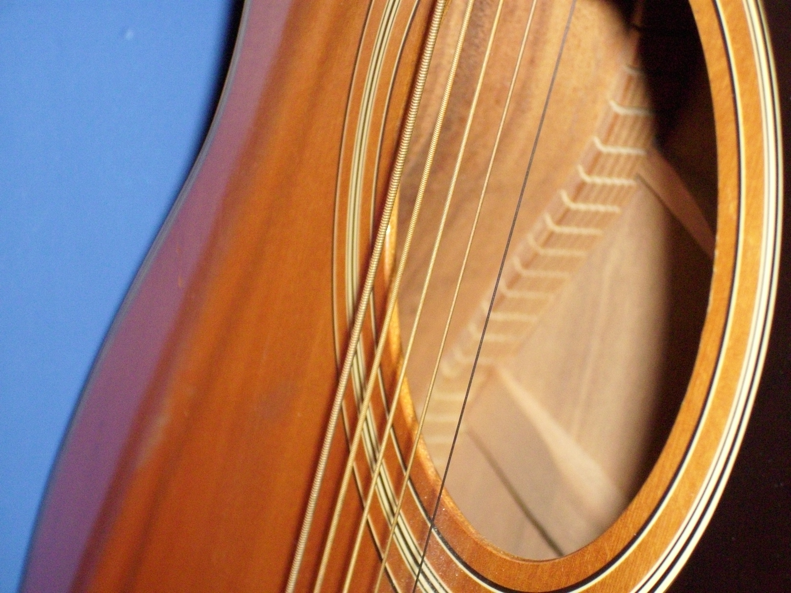

Почему начала
Милана хотела сама исполнять любимые песни, поэтому начала разбирать аккорды и учиться играть.
Любимое хобби
Милана начала учиться играть, чтобы самой исполнять любимые песни. Со временем гитара стала способом выражать настроение, отдыхать и переключаться от повседневных дел.
Узнать её историю
Три факта
От первых аккордов до привычки, которая помогает отдыхать.
Милана хотела сама исполнять любимые песни, поэтому начала разбирать аккорды и учиться играть.
Она регулярно разучивает новые композиции и постепенно играет увереннее.
Гитара помогает отвлечься от повседневных дел, расслабиться и выразить своё настроение.
Главная мысль
«Мне нравится момент, когда песня, которая сначала совсем не получалась, постепенно начинает звучать так, как хотелось».